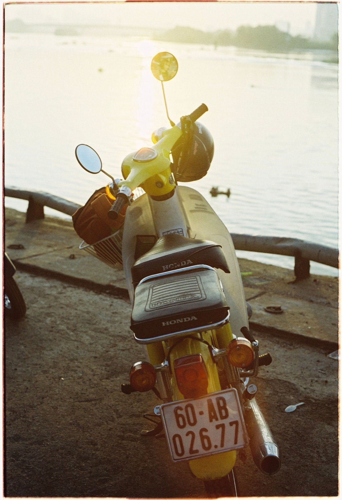
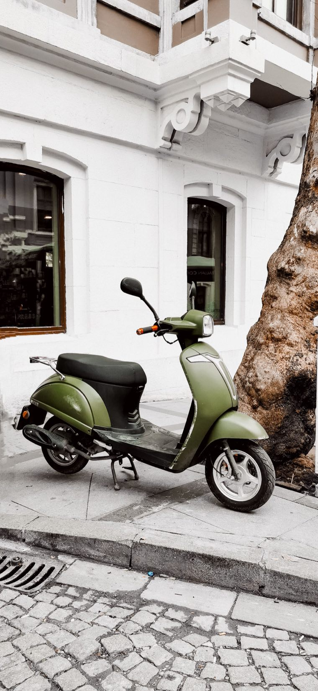

«50cc, без прав» в заголовке — ещё не доказательство. Во Вьетнаме одинаково выглядящие скутеры могут иметь разный объём, а старый пластик и наклейки вообще ничего не гарантируют. До денег нужно подтвердить не красивую модель, а данные в регистрации.
Для бензинового xe gắn máy ключевой порог — рабочий объём до 50 см³ включительно. В документах часто встречается 49.5cc: это нормальный вариант той же категории. Но одна цифра «50» в названии объявления или на боковом пластике не подтверждает ничего.
Вопрос прав, возраста, страховки и правил движения всегда зависит от действующих в стране требований и твоей ситуации. Поэтому перед поездками проверь актуальные правила; при покупке же наша задача проще — не купить под видом 50cc байк с другим объёмом.

Honda Cub, Vespa-стиль, SYM, Kymco или безымянный «ретро-скутер» могут существовать в нескольких версиях. Продавец мог выбрать неверную категорию на площадке, поставить чужое название или сам не разбираться. Это не повод спорить — просто просим фото документа и переходим к следующему лоту, если его нет.
Достаточно коротко попросить фото cà vẹt — вьетнамской регистрации. На фотографии должны читаться:
Не нужен допрос и не нужно просить все номера заранее. Сначала подтверждаем, что это именно нужная категория, затем просим живое видео: запуск, короткая поездка, свет и внешний вид крупным планом.
Нет. Фото регистрации — самый простой первый фильтр. Если его нельзя прислать сейчас, деньги обсуждать рано.
Такая история означает, что нельзя полагаться только на карточку объявления. До покупки нужно понять, что совпадает с регистрацией и что именно реально продают. Когда объяснения путаные — лучше пропустить.
Для туриста и для перепродажи это почти всегда плохая экономия. Такой байк сложнее безопасно купить, проверить, продать и объяснить покупателю его происхождение.
Если хотя бы один базовый пункт вызывает сомнение, не надо искать оправдание объявлению. На рынке много байков — следующий вариант будет проще и безопаснее.
Мы не выставляем байк только потому, что он красиво выглядит. Перед продажей отбираем подходящие 50cc, проверяем документы и реальное состояние, затем делаем базовую подготовку. Так покупатель в Нячанге видит байк уже после первичного отбора, а не пытается расшифровать объявление на вьетнамском.
Если покупаешь из другого города, прочитай наш гид о доставке байка в Нячанг. А полный осмотр перед сделкой — в статье «Как проверить байк и документы перед покупкой».